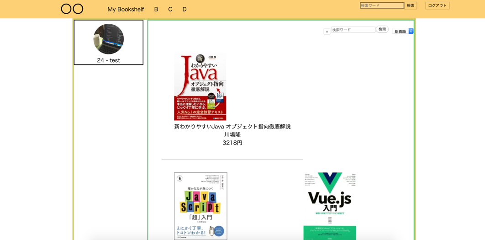

Portfolios
| インターン・アルバイト | |||
|---|---|---|---|
| ・株式会社ココスペース | 2017年11月~2019年4月 | ||
| バックエンドエンジニアとして医療システム開発、自社開発にコミット。サーバーサイドの実装はPHPで行っていたが実際にはフロントの調整などの仕事も多く、必要なデータをDBから引き抜きフロントに反映させるなど行ったりしていた。その過程で、必要なSQLメソッドを実装したりもしていた。 | |||
| ・VOYAGE GROUP | 1day-internship | 2019年3,5月 | |
| 簡単な掲示板アプリのCRUD処理などを行うAPIをGoで実装。チーム開発も行い、先の掲示板アプリに外部のAPIを叩いて"おもしろく"した。弊チームではyahooのお天気APIを叩きbotとして使った。もっと面白くしたかったが制限時間があったので少し時間が足りなかった(反省)。チーム内で最低限動くものは作れたのでチーム開発としてはとても有意義だった。なお、私はサーバーサイドでAPIを叩く関連のところを担当した。 | |||
| 趣味開発 | |||
|---|---|---|---|
| ・本棚を共有できるwebアプリケーション | 2019年4月~(未デプロイ) | ||
| ・きっかけ | |||
| 本を買って帰った時に家族が同じ本を持っていたという経験があり、本棚をコミュニティで共有したい考えたことが背景 | |||
| サーバーサイド ： Golang | |||
| フロント ： Vue.js | |||
|  | |||
| ・Twitter-Managementer | 2019年7月7日~ | ||
| Twitterのfollowerの管理等をいい感じにしてくれるアプリが目標 CLでtweetできるようにもしたい |
|||
| Golang,Vue.js | |||
| ・Bitcoin自動トレード | 2019年8月(予定)~ | ||
| Golang,Vue.js | |||
| ・ノリで作るToDoアプリ | 2019年のどこか | ||
| Golang,Vue.js予定。変わるかも | |||
| 個人的なToDoアプリを作りたい。 ・googleカレンダーとの連携 ・メールでの通知機能 ・CLで管理 あたりができるようにしたい |
|||